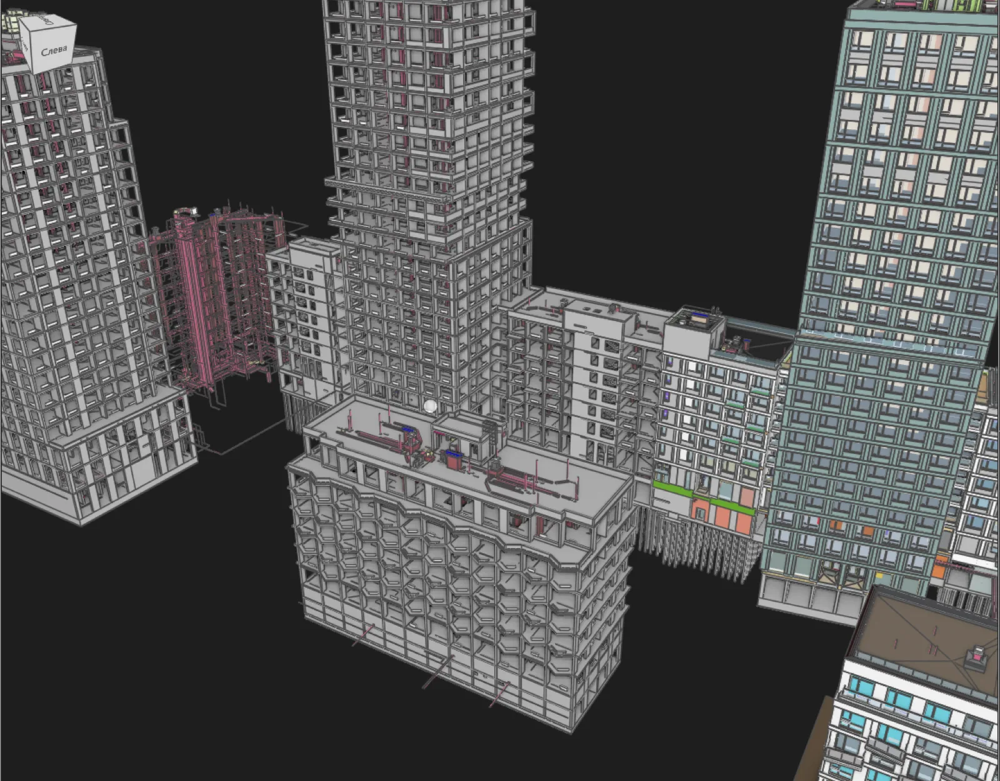

Clash detection: как сделать из отчёта управляемый процесс
Жизненный цикл пункта по коллизии: приоритеты A-B-C, кто закрывает, какие сроки реальны, четыре метрики процесса и пять причин, по которым разбор глохнет.

Отчёт на 1 240 пересечений ушёл смежникам в понедельник. Через две недели закрытыми числились одиннадцать позиций. Ещё через месяц отчёт перестали открывать вовсе, а на площадке начали резать воздуховоды по месту.
Проверка сработала, процесс нет. Машина честно нашла конфликты, но у находки не было хозяина, срока и цены. Ниже про организационную часть: что происходит с пунктом от появления до закрытия и почему это отдельная работа.
Про кнопки, наборы и настройку тестов есть отдельный разбор: проверка коллизий в Navisworks по шагам. Здесь про людей.
Список коллизий это не работа, а сырьё
Между «нашли пересечение» и «на стройке нет проблемы» лежит пять действий, и ни одно из них программа не делает.
- Отсеять шум и сгруппировать однотипное.
- Понять, кто должен двигаться: труба, балка или стена.
- Назначить раздел и срок.
- Дождаться правки и проверить её на следующем прогоне.
- Зафиксировать решение, если пересечение признали допустимым.
Пропустите любой шаг, и получите то, с чего я начал: тысячу строк, которые никто не разбирает. Причём вина ляжет на инструмент, хотя инструмент отработал ровно так, как его настроили.
Жизнь одного пункта
| Статус | Кто ставит | Что означает | Срок |
|---|---|---|---|
| Новый | машина | появился на текущем прогоне | разобрать за 2 дня |
| В работе | координатор | назначен разделу, есть ответственный | по приоритету |
| Спорный | автор раздела | нужна встреча, решение не очевидно | до ближайшей планёрки |
| Допустимый | координатор | решается на месте, менять модель не будем | закрыт с комментарием |
| Закрыт | машина | геометрия больше не пересекается | подтверждён прогоном |
Ключевое правило: статус «закрыт» ставит не человек, а следующий прогон. Инженер сообщает, что поправил, координатор проверяет на сборке. Иначе через месяц выясняется, что половина закрытых пунктов живее всех живых.
Второе правило: у «допустимого» всегда есть комментарий. Одна строка, почему пересечение оставили. Без неё через полгода никто не вспомнит логику, и пункт всплывёт заново.
Приоритеты: не всё одинаково дорого
Сортировка по важности экономит больше времени, чем любая настройка допусков. Три категории закрывают почти всё.
A, дорого исправлять на площадке. Инженерия сквозь несущие конструкции без заложенных отверстий. Магистраль, не проходящая по высоте в коридоре. Оборудование, которое не втащить в помещение. Такие пункты идут первыми и обсуждаются лично.
B, переделка документации. Пересечения между инженерными системами, где решение очевидно, но затрагивает несколько листов. Основной объём работы, разбирается разделами самостоятельно.
C, косметика и допуски. Касания на пару миллиметров, изоляция, задевающая соседний лоток. Часть закрывается настройкой проверки, часть решается монтажником на месте.
| Категория | Доля от отчёта | Кто решает | Срок |
|---|---|---|---|
| A | 5-10% | ГИП и ведущие разделов | 3 рабочих дня |
| B | 30-40% | авторы разделов | 1-2 недели |
| C | 50-60% | координатор закрывает или снимает | по остаточному принципу |
Цифры из наших сборок по жилым домам и общественным зданиям. Соотношение держится удивительно стабильно: реальных проблем в отчёте всегда меньше десятой части, и весь фокус в том, чтобы их не потерять среди остального.
Кто двигается
Спор «пусть подвинут они» съедает больше времени, чем сама правка. Помогает письменное правило приоритета систем, принятое один раз на весь проект.
Рабочая иерархия обычно такая: несущие конструкции не двигаются, самотёчная канализация не двигается (уклон), воздуховоды двигаются с трудом (габарит), водопровод и кабельные трассы двигаются легко. Спорные случаи решает ГИП, а не переписка на четырнадцать сообщений.
Назначать пункт нужно на раздел, а не на фамилию. Раздел никуда не денется, а инженер уйдёт в отпуск ровно в неделю выдачи.
Сколько пунктов команда закрывает реально
Планировать разбор без нормативов бесполезно. Наши замеры на объектах среднего размера:
- координатор разбирает и группирует 150-250 сырых пересечений за рабочий день;
- инженер раздела закрывает 8-15 пунктов категории B в неделю без ущерба основной работе;
- обсуждение пункта категории A занимает 10-20 минут на встрече, больше пяти таких за раз не проходит.
Отсюда простая арифметика. Если после первой сборки у вас 400 сгруппированных пунктов и четыре инженера, разбор займёт примерно два месяца при обычной загрузке. Ждать закрытия за неделю бессмысленно, и лучше сказать об этом руководителю сразу, чем через месяц объяснять, почему график не выполнен.
Четыре числа, по которым видно состояние
Каждую неделю в таблицу пишут одну строку.
- Новых. Сколько появилось на свежем прогоне.
- Закрытых. Сколько подтверждено проверкой.
- Старше двух недель. Главный показатель: здесь копятся будущие проблемы на площадке.
- Открытых заново. Пункт закрывали, а он вернулся. Больше 10% означает, что правки делают наспех.
Через полтора месяца таблица начинает разговаривать сама. Закрытых стабильно меньше новых, значит команда не справляется с потоком, и вопрос уже не к проверке, а к срокам или к загрузке. Растёт число повторных открытий, значит правки идут в спешке перед выдачей.
Руководителю эти четыре числа полезнее любого отчёта на сотни страниц. Читаются за десять секунд.
Пять причин, по которым процесс глохнет
Смежникам отдают сырой отчёт. Симптом: письмо с файлом на 1 200 строк и просьбой «посмотреть». Такое не открывают. Отдавать нужно сгруппированное и отсортированное, 40-80 пунктов на раздел максимум.
Нет ответственного за ведение. Симптом: пункты живут в переписке, у каждого своя версия списка. Дальше начинается спор о том, чей список верный.
Каждый прогон начинается с нуля. Симптом: статусы слетают, старые пункты приходят как новые. Обычно тесты пересобирают заново вместо обновления исходников, и вся история теряется.
Правки не проверяют. Симптом: раздел отчитался, что всё поправлено, а на следующей сборке те же пересечения. Закрытие без подтверждения прогоном это самообман.
Обсуждают вместо решений. Симптом: полтора часа встречи, девять закрытых пунктов, никакого протокола. Лечится форматом встречи, про который есть отдельный разбор: регламент BIM-координации.
Что делать с наследством
Отдельный случай: проект идёт восьмой месяц, координацией никто не занимался, а теперь надо. Заходить в такую ситуацию по общему правилу нельзя, утонете в первом же отчёте.
Порядок другой. Сначала гоняем только критичные сочетания разделов: инженерия против несущих конструкций и проходы по высоте в коридорах. Всё остальное сознательно откладываем.
Из полученного списка берём двадцать самых дорогих позиций и работаем только с ними. Двадцать, а не двести: у команды уже есть основная загрузка, и вклинить в неё больше не выйдет.
Дальше честный разговор с ГИПом. Часть найденного исправлять поздно, документация выпущена, и правка потянет за собой перевыпуск нескольких комплектов. Такие пункты переводят в отдельный список «на стройку»: отверстия по месту, согласованные отступы, узлы, которые решает монтажник. Список отдают на площадку заранее, а не оставляют на удивление прорабу.
Полноценный цикл со всеми проверками включают со следующего объекта. Пытаться развернуть его на середине текущего означает потратить месяц и получить обиженную команду.
Чего от процесса не ждать
Он не доводит число коллизий до нуля. Ноль в отчёте означает, что проверка настроена неправильно: слишком грубые допуски или пустые наборы. Рабочий диапазон перед выдачей рабочей документации мы считаем 30-80 открытых пунктов после группировки.
Он не работает быстрее, чем публикуются модели. Раздел выкладывает свежую модель раз в месяц, значит и проверять будете месячной давности геометрию. Ритм публикаций первичен, про это отдельно в статье про сборку сводной модели.
Он не заменяет инженерных решений. Программа показывает, что труба вошла в балку. Куда её вести и не нарушит ли обход уклон, решает человек с профильным образованием.
И он не спасает проект, запущенный на восемьдесят процентов. Заходить в координацию за две недели до выдачи поздно: пункты найдутся, а времени на переделку документации не останется. В такой ситуации честнее выбрать десять самых дорогих позиций категории A и заниматься только ими.
Короткие ответы
Как часто гонять проверку? Раз в неделю на активной стадии. Полный прогон ставят на ночь, короткие точечные делают в течение недели.
Сколько коллизий считать нормой? Смотрите не на общее число, а на динамику и на пункты старше двух недель. Абсолютная цифра зависит от настроек и ничего не говорит о качестве проекта.
Кто должен вести пункты, если координатора нет? Временно ГИП или ведущий одного из разделов. Хуже всего вариант «ведут все»: тогда не ведёт никто.
Нужен ли отдельный трекер задач? На объекте до 300 пунктов хватает выгрузки и общей таблицы. Дальше удобнее система с историей, где виден автор, дата и статус.
Можно ли автоматически группировать однотипные пересечения? Да, по сочетанию систем и по осям это делается скриптом. Экономит координатору 2-4 часа на каждой сборке.
С чего начать
Возьмите последний отчёт по коллизиям и отсортируйте его по трём категориям. Час работы. Скорее всего, окажется, что пунктов категории A там десяток, и именно с ними никто предметно не работал.
Дальше назначайте ответственного за ведение и заводите таблицу из четырёх чисел.
Мы настраиваем этот цикл под команду или ведём его сами: приоритеты, назначения, контроль закрытия и еженедельная сводка руководителю. Подробности на странице BIM-координации, обсудить задачу можно через контакты.
Нужен похожий BIM/AI процесс?
Напишите в Telegram или на email — разберём задачу и предложим архитектуру решения.
Telegram Оставить заявку